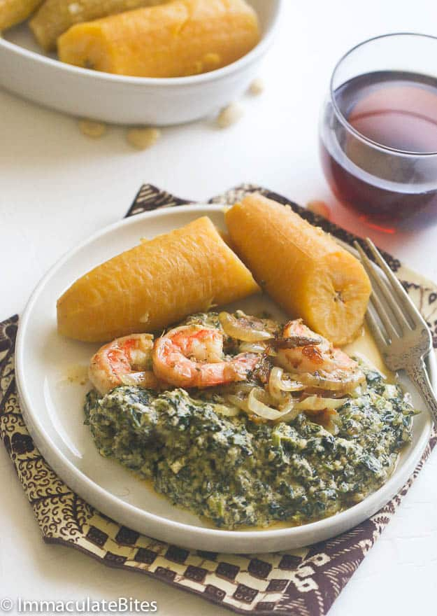

Ndole (Spinach/Bitterleaves And Peanut Soup)

Description
An aromatic Cameroonian spinach stew made of spinach and bitter leaves –
flavored with garlic, crayfish and fortified with shrimp and beef. Comfort food at its best.
Ingredients
- 2 Tablespoons Maggi ( Bouillon)
- 1 large Onion ( sliced)
- 1 pound (about 2 cups )Groundnuts/Peanuts(Skinless)
- 1/2 pound shrimp
- 1/2 pound stockfish
- 1/2- 1 pound Stew beef (cut in chunks
- 4-5 garlic cloves
- 3/4 cup Crayfish (ground)
- 3/4 -1 pound Washed bitterleaves (sub frozen spinach)
- 2-3 cups oil
Steps
-
In a large pan season meat with salt, maggi and onions and boil until tender depending on the choice of meat. Meanwhile, boil stock fish with salt and water; add it to the boiled meat. You should have about 3 cups of stock from the meat and stock fish. Reserve the rest or freeze it.
-
Boil peanuts for about 10 minutes in a sauce pan. Let it cool and blend/pulse in a food processor or blender into a fine consistency use water to facilitate the blending .Add to the mixture of beef and stockfish.
-
Blend one onion and garlic into a fine paste and add to the mixture of peanuts and meat.
-
Pour in the crayfish and let it simmer for 10 minutes stirring frequently to prevent burns. Season with salt and Maggi.
You might have to add more later
-
Add the bitter leaves or spinach to the pot. Stir and simmer for several minutes more
-
While the pot of ndole is simmering, heat oil in a fry pan or, preferably a cast iron. Add the shrimp, stirring constantly until they just turn pink. Slice and add the remaining onions stir for a few more minutes.
-
While the pot of ndole is simmering, heat oil in a fry pan or, preferably a cast iron. Add the shrimp, stirring constantly until they just turn pink. Slice and add the remaining onions stir for a few more minutes.